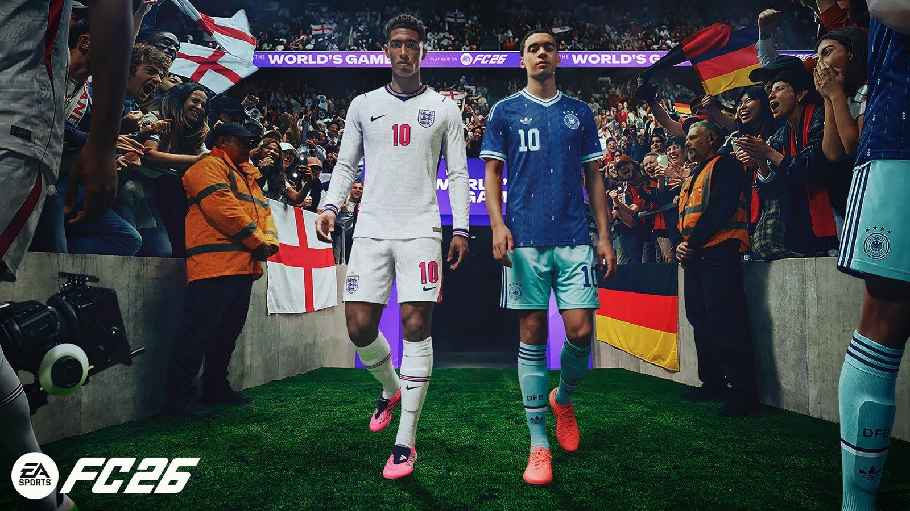
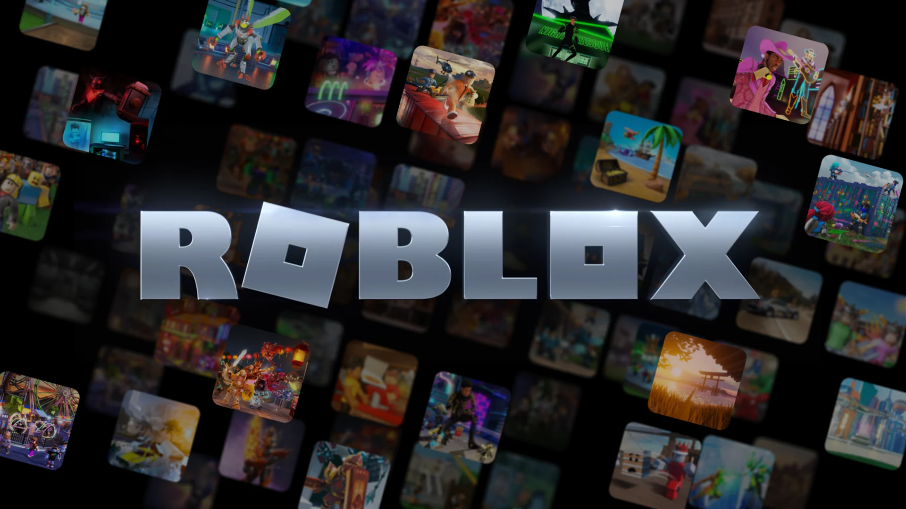

My Interests
In my free time, I like playing video games with friends, trying new recipes at home, and listening to music when I want to relax.


Listening to Music
I listen to music when I want to relax or keep myself company while doing other things. What I play usually depends on my mood.
My Playlist
A few songs or artists I listen to.
Playing Video Games
I enjoy playing video games in my free time. It’s a way for me to relax after a busy day, and I like the feeling of getting better at a game the more I play.
Games I Play

I always play FC 26 with my friends. Beating them is my favorite part.

I play horror games on Roblox with my friends. Getting scared together is half the fun.
I play GTA Online with my friends. I like teaming up and figuring out how to finish missions together.

I’m still getting the hang of Valorant. My friends always carry me, haha.
Cooking
I enjoy making meals at home and trying different recipes. I like seeing how a dish turns out, especially when it’s something I’m making for the first time.